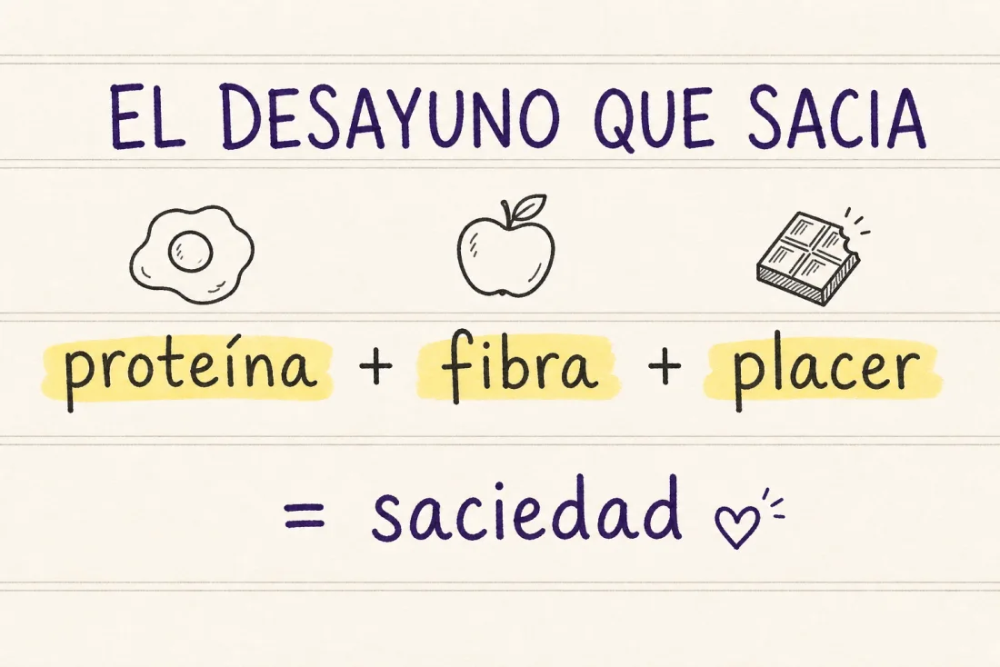
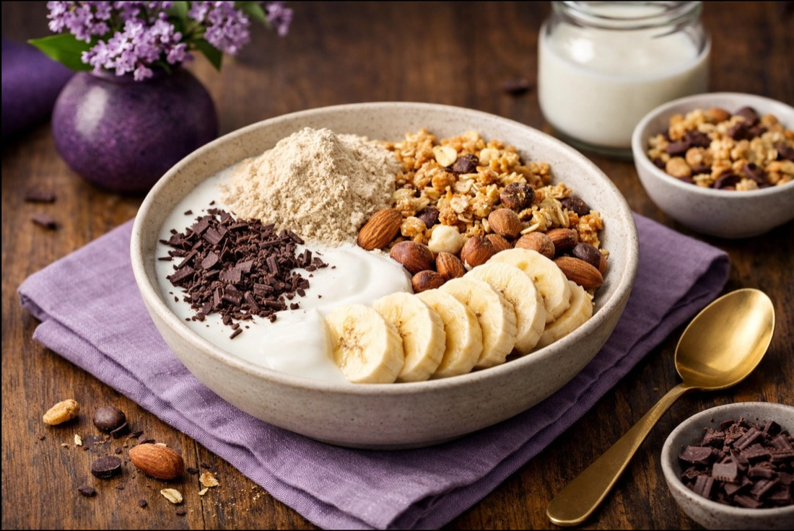
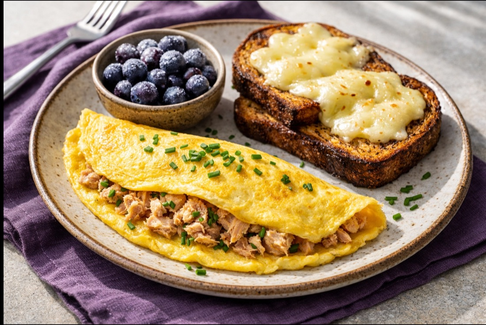
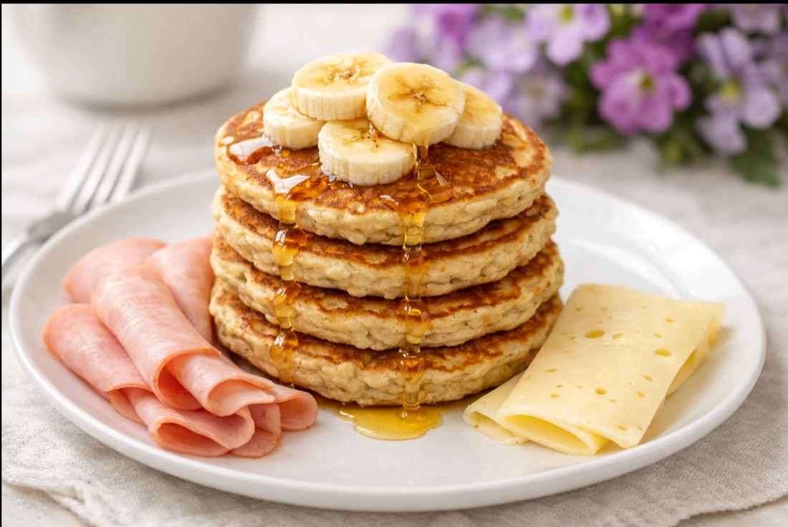
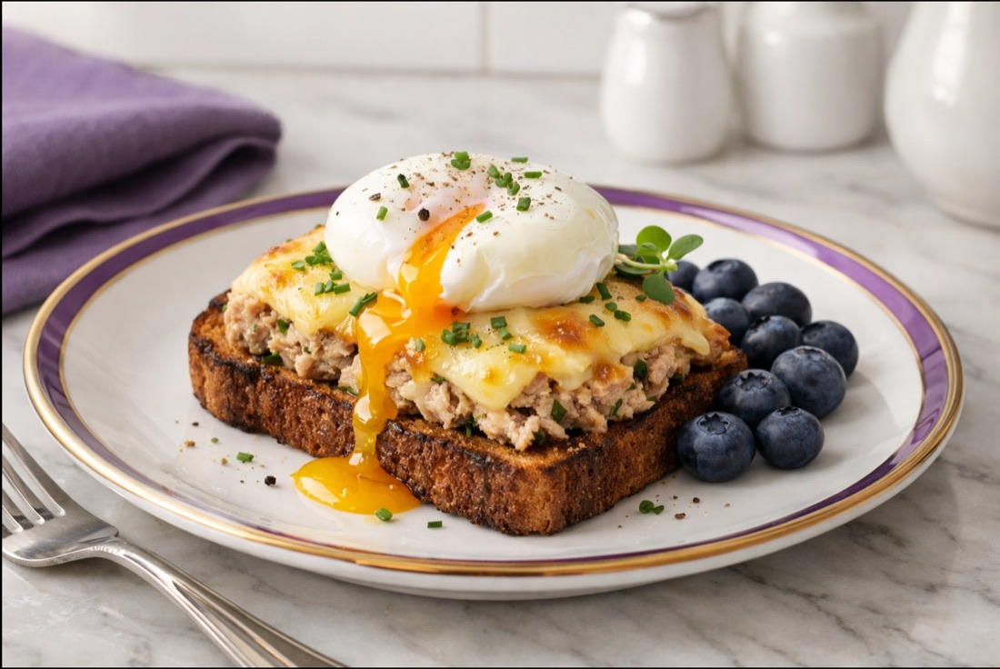
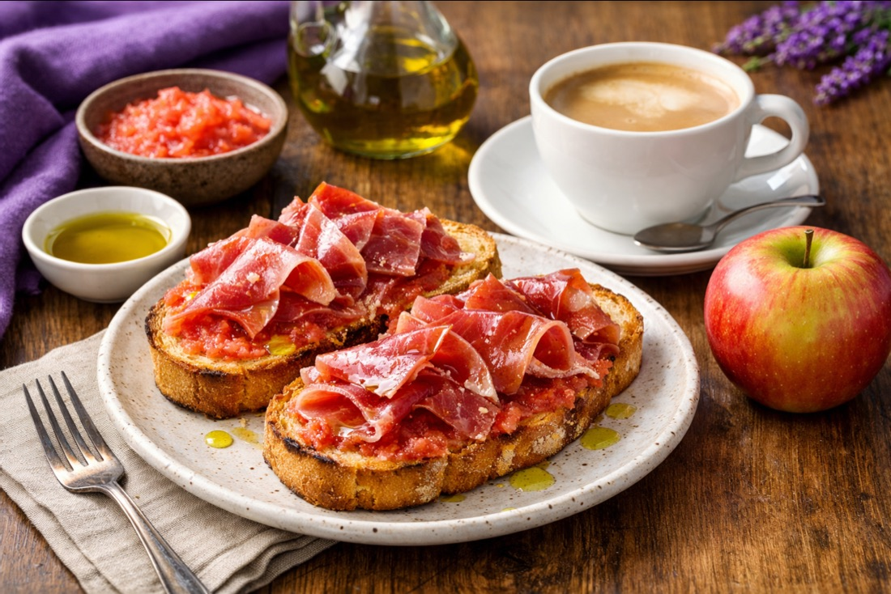
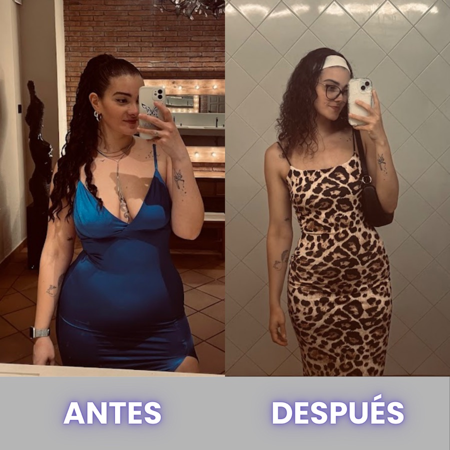

Los mejores desayunos para perder grasa
5 desayunos reales que sacian de verdad, con sus macros y su preparación. Sin pasar hambre y sin tostada triste.
El secreto detrás del cambio
¿Alguna vez has sentido que estás atrapada en un ciclo sin fin de dietas restrictivas, comiendo pollo y brócoli sin sabor, solo para recuperar el peso perdido a las pocas semanas? Yo también estuve ahí. Pero hoy quiero contarte una historia diferente.
Soy Ashley, la creadora del Método Efecto Mariposa, y mi misión ha sido transformar la vida de más de 100 mujeres que, al igual que tú, buscaban una solución real. No hablo de perder un par de kilos para una boda; hablo de transformaciones profundas de 12, 15 y hasta 20 kilos.
¿El secreto? No es el sufrimiento. Es la flexibilidad. En Efecto Mariposa trabajamos la mentalidad y el entrenamiento inteligente, pero sobre todo, celebramos la comida. NINGUNA DE MIS ALUMNAS COME ALGO QUE NO LE GUSTE. Aquí no hay obligaciones, solo elecciones inteligentes que te acercan a tu mejor versión mientras disfrutas de tus platos favoritos.
Estos 5 desayunos son los mismos que mis chicas utilizan para encender su metabolismo cada mañana. Prepárate para descubrir que perder grasa puede ser la experiencia más deliciosa de tu vida.
La fórmula del desayuno que sacia
Antes de las recetas, quédate con esto. Todos mis desayunos cumplen la misma fórmula de tres piezas:
- Proteína de verdad (30 g o cerca): es lo que apaga el hambre hasta la comida.
- Fibra o fruta: volumen, digestión feliz y energía estable.
- Algo que te haga ilusión: chocolate, tortitas, pan del bueno. SI NO TE GUSTA, NO ES SOSTENIBLE. Y SI NO ES SOSTENIBLE, NO FUNCIONA.

aquí va un dibujito a mano ✏️desayunos-formula.webp
Las 5 recetas
1 · Yogur con cereales y fruta el + fácil

Perfecto para esos días en los que necesitas un extra de energía sin sentirte pesada. Es una explosión de texturas y sabores que te mantendrá saciada durante horas.
- 585 kcal
- P 40,1 g
- C 53,3 g
- G 23,4 g
- Fibra 10,8 g
Ingredientes:
- 200 g de kéfir natural
- 30 g de proteína en polvo
- 25 g de muesli crujiente sin azúcares añadidos
- 10 g de frutos secos
- 3 g de edulcorante (sucralosa)
- 10 g de chocolate negro 85%
- 100 g de plátano
Preparación:
- En un bol mediano, mezcla el kéfir con la proteína en polvo y el edulcorante hasta obtener una crema homogénea.
- Corta el plátano en rodajas finas y pica el chocolate negro en trozos pequeños.
- Añade el muesli y los frutos secos sobre la base de kéfir.
- Corona con el plátano y las virutas de chocolate. ¡Listo para disfrutar!
2 · Tortilla francesa completa el clásico

Si eres de las que prefiere empezar el día con algo salado y contundente, esta es tu opción ganadora. Alta en proteínas para proteger tu masa muscular mientras pierdes grasa.
- 589 kcal
- P 43,1 g
- C 45,4 g
- G 24,1 g
- Fibra 9,4 g
Ingredientes:
- 60 g de huevos frescos (1 huevo grande)
- 110 g de pan de molde 55% centeno
- 50 g de queso havarti light en lonchas
- 60 g de atún claro al natural
- 50 g de arándanos
Preparación:
- Bate el huevo y prepáralo en una sartén antiadherente con una gota de aceite, añadiendo el atún bien escurrido en el centro antes de doblarla.
- Tuesta las rebanadas de pan de centeno y coloca las lonchas de queso encima para que se fundan con el calor.
- Sirve la tortilla junto a las tostadas.
- Disfruta de los arándanos al final para un toque dulce y antioxidante.
3 · Tortitas de avena y plátano el capricho fit

¿Quién dijo que no se pueden comer tortitas mientras pierdes grasa? Esta receta es la prueba de que el Método Efecto Mariposa es diferente.
- 451 kcal
- P 30,2 g
- C 54,9 g
- G 9,0 g
- Fibra 6,6 g
Ingredientes:
- 40 g de copos de avena
- 100 g de plátano
- 3 g de edulcorante (sucralosa)
- 80 g de jamón de pavo
- 25 g de queso havarti light
- 1/2 vaso de leche desnatada o vegetal
Preparación:
- Tritura la avena, el plátano, el edulcorante y la leche hasta obtener una masa espesa.
- Cocina pequeñas porciones en una sartén a fuego medio hasta que salgan burbujas, luego dales la vuelta.
- Sirve las tortitas calientes.
- Acompaña con el pavo y el queso (puedes hacer rollitos o comerlos aparte para el contraste dulce-salado).
4 · Tostadas con aguacate y huevo el gourmet

Un desayuno elegante, equilibrado y cargado de grasas saludables que cuidan tu sistema hormonal mientras transformas tu cuerpo.
- 381 kcal
- P 31,0 g
- C 26,9 g
- G 15,6 g
- Fibra 5,6 g
Ingredientes:
- 60 g de huevos frescos
- 55 g de pan de molde 55% centeno
- 25 g de queso havarti light
- 60 g de atún claro al natural
- 60 g de arándanos
Preparación:
- Tuesta el pan de centeno hasta que esté crujiente.
- Prepara el huevo a la plancha o escalfado (poché) para que la yema quede líquida.
- Mezcla el atún con el queso picado y colócalo sobre la tostada.
- Pon el huevo encima y rompe la yema para que bañe el pan.
- Acompaña con los arándanos frescos.
5 · Tostadas con tomate y jamón serrano el clásico español

Este es el desayuno que demuestra que no necesitas alimentos exóticos para perder 20 kilos. Es nuestra herencia, es sabor puro y, sobre todo, es una herramienta brutal para mantenerte saciada y con energía toda la mañana.
- 377 kcal
- P 18,3 g
- C 51,0 g
- G 12,0 g
- Fibra 3,8 g
Ingredientes:
- 40 g de barra de pan (mejor integral o de masa madre)
- 25 g de jamón serrano de calidad
- 20 g de tomate maduro rallado
- 5 g de aceite de oliva virgen extra
- 150 g de manzana (de postre, para fibra y saciedad)
- 250 g de café con leche desnatada o vegetal
Preparación:
- Tuesta la barra de pan hasta que esté dorada y crujiente por fuera pero tierna por dentro.
- Ralla el tomate maduro y extiéndelo generosamente sobre el pan caliente.
- Añade el chorrito de aceite de oliva y una pizca de sal (opcional).
- Coloca las lonchas de jamón serrano por encima, dejando que el calor del pan suelte el aroma del jamón.
- Disfruta de tu café con leche y termina con la manzana fresca para una digestión perfecta.
Tu transformación comienza aquí
🌟 «En solo 4 meses he perdido 17 kg y he ganado algo aún más valioso: seguridad, autoestima y amor propio. Empecé con miedo y con la meta de perder 12 kg en 3 meses... ¡y los bajé en 2! Pasé de esconderme con ropa ancha a sentirme orgullosa de cómo me veo, disfrutando de mi cuerpo sin vergüenza. Más allá del cambio físico, lo que más valoro es el cambio mental: ahora creo en mí, me quiero más y sé que puedo con todo. Gracias a Ashley, Diego, y a mí misma por no rendirme. ¡Vamos a por más!»
Emma, 26 años

Como has visto, el Método Efecto Mariposa no se trata de pasar hambre ni de comer alimentos que detestas. Se trata de libertad. Libertad para comer lo que te gusta, libertad para entrenar de forma inteligente y libertad para convertirte en la mujer que siempre has querido ser.

¿Estás lista para dar el paso definitivo?
No dejes que pase un día más sintiéndote estancada. Hemos ayudado a cientos de mujeres a recuperar su confianza, su salud y su sonrisa. Pero no queremos que nos creas a nosotras: QUEREMOS QUE LO VIVAS TÚ MISMA.
Escríbeme por Instagram y te cuento sin compromiso cómo trabajamos: nutrición flexible con tu comida favorita, entrenamiento a tu ritmo y la parte emocional, de la mano. Y vemos juntas si es para ti.
Escríbeme por Instagram 💜mándame un dm a @ashleey.fit y dime «quiero saber más»
el cambio que buscas empieza con una sola decisión. vuela alto 🦋 Ashley